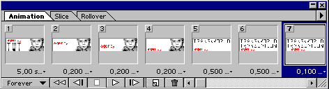

Создание сложного анимированного баннера
Не будем спорить, что именно называть "сложным" анимированным
банером - здесь разговор пойдет о баннере, в котором БОЛЬШЕ трех фреймов. И
больше 10. Скажем, около 150. Интересно?
Одно из условий, стоящих перед всеми дизайнерами-разработчиками
- его творение должно быть легким. Как правило верхняя граница веса - не более
15 Kb. Поскольку речь пойдет именно об анимированном гифе, т.е. о наборе
индексированных изображений, напомним еще несколько правил:
-
палитра gif'a может содержать максимум 256 цветов (меньше -
можно, больше - нет) и в нем применяется алгоритм сжатия без потери качества
изображения (конкретно - алгоритм LZW). Также GIF допускает создание
прозрачных областей и анимации. Используя gif-формат, следует помнить о
закрытости лицензии алгоритма компрессии LZW, из-за чего требуется её (эту
самую лицензию) оплачивать для использования в любом программном обеспечении.
Этот недостаток приведёт к тому, что постепенно в графике для web от формата
GIF будут отказываться в пользу других, более открытых форматов. Что касается
анимированных баннеров - здесь альтернативой может являться использование
flash-технологий, avi... Печально это как-то звучит... И все же, поскольку
разговор идет именно об анимированном gif`е, переходим к сл. пункту:
-
наиболее существенный параметр индексированного изображения -
количество цветов в его палитре. Важной задачей при создании нашего баннера
станет сведение количества цветов к минимуму;
-
Наличие градиентных заливок и многоцветных рисунков и
фотографий делает невозможным серьезное уменьшение количества цветов в
палитре, поэтому градиентных заливок у нас не будет, а с фотографиями:
посмотрим;
-
Опять же в целях уменьшения количества цветов в палитре
рекламный текст, присутствующий на баннере, будет без сглаживания. Следует
отметить, что anti-aliased вообще имеет смысл включать только лишь для шрифта
крупнее 12px - мелкий шрифт читаться со сглаживанием не будет. Конечно, тут же
перед вами возникнет проблема выбора шрифта - но это вопрос к следующему
материалу.
-
Очень сложно подготовить большое количество фреймов, соблюдая
динамику и не допустить никаких ошибок, поэтому технология изготовления
баннера из отдельных кадров, поочереди загружаемых в Ulead Gif Animator нам не
подойдет. Баннер будем делать в Adobe (все исходники можно собрать в
PhotoShop`e, a саму анимацию - в ImageReady)
Предположим, что вы уже знаете, в какой цветовой гамме будет
ваш баннер, и что будет происходить (крутиться, двигаться, появляться и
исчезать). Создаете новый файл, в полях размеров указываете формат вашего
баннера, в подразделе background выбираете transparent - вы получили поле
нужного размера с одним, пока еще пустым слоем.
-
При создании баннеров важно помнить, что чудное свойство
гифа, анимированного в том числе - transparent в данном случае можно забыть,
поскольку зачастую судьбу баннера предсказать трудно - на какой сайт, с каким
фоновым цветом или еще хуже - с каким background image ваш шедевр станет. Т.е.
ваша прямоугольная область не должна иметь прозрачных участков
-
В случае если разрабатываемый баннер имеет цвет, отличный от
белого, черного и серого, - скорее всего общий тон вашего баннера будет
отличаться от основного тона страницы сайта. Теория вероятности штука сложная,
но даже если вы делаете баннер с хитролиловым background`oм, и он попадает на
похожий хитролиловый сайт (совершенно случайно) - скорее всего оттенки все же
будут отличаться. Но баннеры со стандартным цветом background`а лучше
оформлять в рамочку, можно тоненькую однопиксельную, можно цвета не сильно
отличающегося от основного: Для того, что бы ту информацию, которую
представляете в баннере ВЫ отделить от общей информации пространства чужого
для вас cайта.
-
Пора считать - background и обводка - это уже два цвета.
Считать и контролировать количество используемых цветов придется все
время.
-
Внимательно подумайте - является ли необходимым присутствие
на баннере иллюстраций? Допустим, да. Зачастую это действительно оправдано -
человек, мельком взглянувший на баннер, рекламирующий компьютерный магазин
легче зацепится взглядом за изображение монитора или мыши, чем то же самое,
написанное словами. Если вы решили в баннере эти самые мониторы таки показать
- заранее обработайте изображение - для того, что бы монитор был похож сам на
себя, достаточно двух-трех цветов. Количество цветов продолжаем считать. В
макете уже присутствуют минимум два слоя - подложка с обводкой и слой с
картинкой. Кстати сразу можно использовать в качестве контура баннера самый
темный цвет, присутствующий на картинке.
-
Должно быть пришло время для создания основного текстового
элемента картинки - собственно названия баннера - это может быть название
магазина, имя сайта или любое другое ведущее слово. Опять же - в качестве
цвета выбираете самый контрастный цвет из уже имеющихся - для светлой подложки
- самый темный элемент картинки и наоборот.
ТЕПЕРЬ - предлагается метод порезки слова (любого другого
элемента баннера) для создания динамического эффекта прорисовки элемента баннера
на экране.
-
Впечатываете это слово, выбираете нужную гарнитуру и размер,
в параметрах сглаживания шрифта устанавливаете NONE и делаете копию слоя, в
меню Layer выбираете Type->Render Layer - ваше название перестало быть текстом
- это просто графический элемент, имеющий один (!) цвет.Дайте название слою -
например NAME.
-
Сделайте новый слой. Дайте ему название TEMP - это рабочий
слой, кликать по нему придется часто, и хорошо будет, если его легко можно
будет находить, когда вырастет количество слоев в вашем файле.
-
Нарисуйте на этом слое однопиксельную линию (на выбор -
горизонтальную или вертикальную. Для горизонтально ориентированного баннера,
да еще если в качестве тренировки рекомендую именно горизонтальную)
контрастного цвета. Любого - этот цвет мы считать не будем, поскольку ЭТА
линия в нашем дизайне используется как ИНСТРУМЕНТ, а не элемент баннера,
поэтому лучше сделать ее ярким цветом, да еще и таким, чтобы гарантированно
отличить от реальных деталей баннера.
-
В случае, если готовится таки горизонтальная порезка названия
(которое у нас уже забито в предыдущем слое и сконвертировано в графику)
выберите инструмент move (кнопка c буквой "V" на англицкой
раскладке) и переместите линию в самый верх по отношению к верхнему пикселю
вашего названия (можно вниз - направление принципиального значения не имеет,
важна последовательность)
-
Ctrl-click на слое TEMP - вы получили SELECT прямоугольной
области высотой в один пиксель. Click на слое NAME, Ctrl-Shift-J - и из вашего
названия вырезалась в новый слой однопиксельная полоска. Click на слое TEMP,
при активном инструменте Move стрелкой переместите вашу рабочую полоску на
один пиксель вниз, Ctrl-click на слое TEMP, перейдите на слой NAME,
Ctrl-Shift-J - вы получили еще один слой со второй вырезанной полоской из
вашего названия. По этому алгоритму разрежьте на полоски все ваше слово - слои
последовательно будут создаваться, и их имена будут иметь порядковые
номера.
-
Создайте еще один слой, например со слоганом, описывающим
суть рекламы. Цвет, опять же - из уже существующих в палитре. Параметр
сглаживания текста - NONE.
-
Поскольку рассматривается самый простой вариант сложного
баннера (извиняюсь за неудачный каламбур) другие возможные элементы баннера
рассматривать не будем. Главное описать технологию. Это я говорю к тому, что
сейчас приступаем к сборке заготовок в полноценную анимацию.
Если со слоями вы работали в PhotoShop`e, то сейчас самое время
перейти в ImageReady - в меню File -> Jump to -> Image Ready.
В меню Window выбрать Show Animation - появится свиток, в
котором присутствует один фрейм.

Сделайте все слои макета UnVisible, оставив Visible только подложку и
рамочку.
-
В свитке Animation в левом верхнем углу нажмите на стрелочку
- появится локальное меню свитка. Выберите команду New Frame - вы создали
фрейм, который является дубликатом предыдущего - т.е. со включенным слоем с
подложкой и рамочкой.
-
Включите свойство Visible для слоя с верхней полоской вашего
разрезанного элемента. (возможно слой с названием "Name copy")
-
Создайте еще один New Frame - в нем уже будет подложка,
рамочка и первый элемент, и сделайте Visible слой со второй полоской имени
("Name copy 2").
-
Таким образом - добавляя фреймы и включая слои прорисуйте все
имя, и когда будут включены все слои имени обратитесь к свойству фрейма
"delay" и измените время задержки на, допустим, величину в 5 секунд.
-
Создайте еще один фрейм, проверьте, чтобы параметр delay был
маленьким, и включите видимость слоя с графикой (в нашем примере тот самый
монитор).
-
Новый фрейм - и выключите Visible нижней полоски ИМЕНИ, и по
соответствующей технологии в обратном порядке последовательно, пофреймово
уберите ИМЯ.
-
В новом фрейме включите слой со слоганом. Опять необходимо
увеличить задержку (delay) отображения фрейма.
И для начала достаточно. Параметр цикличности анимации
установите в состояние Forever - и ваш баннер будет прокручиваться всегда.
Обратитесь к свитку Optimize, установите параметры gif - 4
colors - lossy:0 - No dither - Selective - No transparent
В свитке Animation в подменю Optimize Animation нужно отметить
оба checkbox.
Запомните полученый gif (File->SaveOptimizedAs) и запустите гиф
- просмотреть его можно и из Image Ready Plays Animation (движок внизу свитка
Animation), и через File->Preview in в браузере, но если все сделано правильно -
ваша анимация будет проигрываться без смещений и ошибок.
В заключении хотелось бы подчеркнуть тот факт, что эту
технологию можно применять и для создания более сложной анимации - и при
ограниченном количестве цветов можно изготавливать сложные и оригинальные
баннеры.
Можно усложнить процесс прорисовки ИМЕНИ - слои с разрезанными
полосочками продублировать (правая кнопка мыши на слое ->Dublicate Layer) и
дубликатам задать прозрачность слоя 50% (как вариант), и при создании анимации
генерить прорисовку сначала полупрозрачных слоев, затем
непрозрачных.
Подобный эффект можно создать с прорисовкой вертикальных
элементов - и при грамотной композиции элементов баннера и хорошей цветовой
гамме баннер будет удачным.
Как вы могли заметить объект на слое TEMP в
конечном дизайне нами не использовался. Это всего лишь инструмент для быстрого
создания маски, которой вырезается элемент анимации. И маска эта не обязательно
должна быть однопиксельной полоской - это может быть любая произвольная форма.
Движение прорисовки также может происходить в любом направлении, хоть по
диагонали, хоть сначала сверху, потом слева, потом еще откуда нибудь.
Удачных вам анимированных баннеров!
Автор: Татьяна Зяблицева
[email protected]